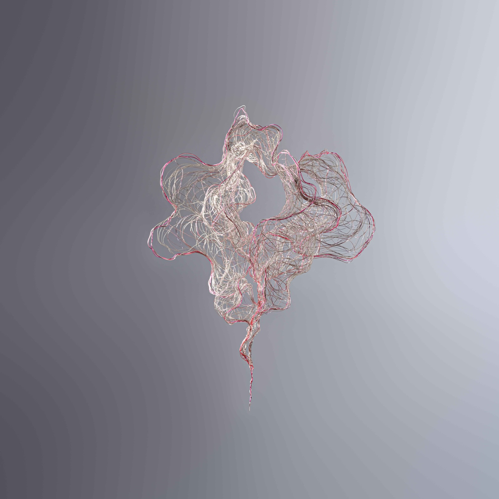
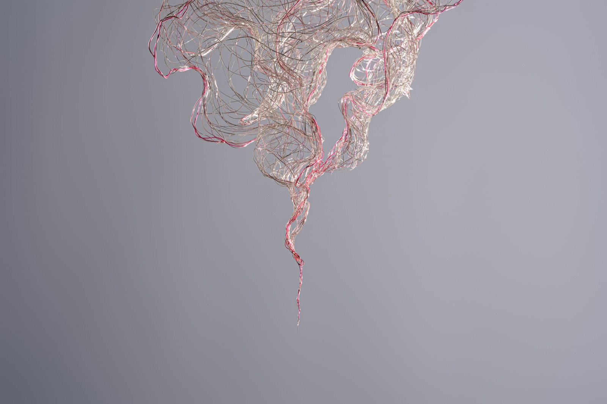

I imagine the night as I weave, with threads as delicate as drifting mist. Suspended in the still air, they form tiny universes cloaked in darkness, where they are both observers and observed.
Darkness softens everything it touches, while silence sharpens the subtlest details and thoughts.
Light fades into a pale brilliance, softly illuminating the flow of time.
In the shadows, all things merge and silently transform, and the rhythms of life are hidden, inaudible.
The boundaries between dream and reality, presence and absence, blur and nearly diffuse. In the depths of darkness, when time feels frozen, it seems to cradle eternity—yet these universes slip away like phantoms, vanishing as quickly as they appear.
Wisps and Whispers III, 2025 · Enamelled copper wire · H82 × W125 × D30 cm · Photo: Chi Hung Chu
Wisps and Whispers 01, 2025 · Enamelled copper wire · H50 × W18 × D20 cm · Photo: Chi Hung ChuWisps and Whispers 02, 2025 · Enamelled copper wire · H120 × W55 × D27 cm · Photo: Chi Hung Chu
Wisps and Whispers 05, 2025 · Enamelled copper wire · H148 × W55 × D45 cm · Photo: Chi Hung ChuWisps and Whispers 05, 2025 · Enamelled copper wire · H148 × W55 × D45 cm · Photo: Chi Hung Chu
Wisps and Whispers 06, 2025 · Enamelled copper wire · H125 × W102 × D30 cm · Photo: Chi Hung Chu

Wisps and Whispers 08, 2026 · Enamelled copper wire · H42 × W33 × D28 cm · Photo: Chi Hung Chu

Wisps and Whispers 08, 2026 · Enamelled copper wire · H42 × W33 × D28 cm · Photo: Chi Hung Chu